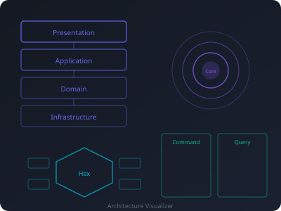
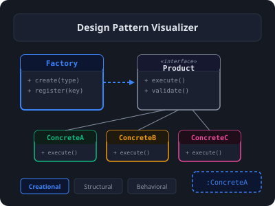
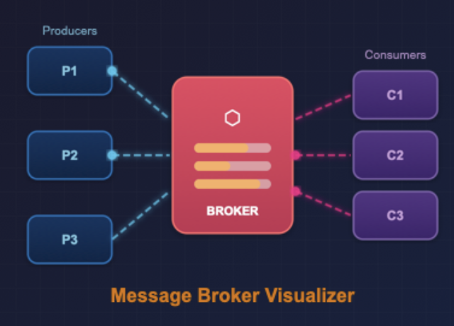
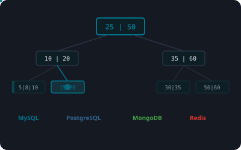
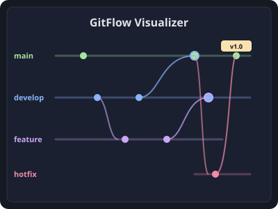

Visualizers
Visual Learning — These interactive tools are designed to simplify and visualize complex software engineering concepts, from architecture patterns to database mechanics. Explore how things work under the hood! Have a suggestion? Open an issue or submit a pull request.
-

Architecture Visualizer -

Design Pattern Visualizer -

Message Broker Visualizer -

Database Index Visualizer -

GitFlow Visualizer
Experiments
Fun Projects Only — Here you'll find only a selection of projects I create for fun and experimentation. To see more projects, visit my GitHub. Found a bug or have an idea? Open an issue or submit a pull request.